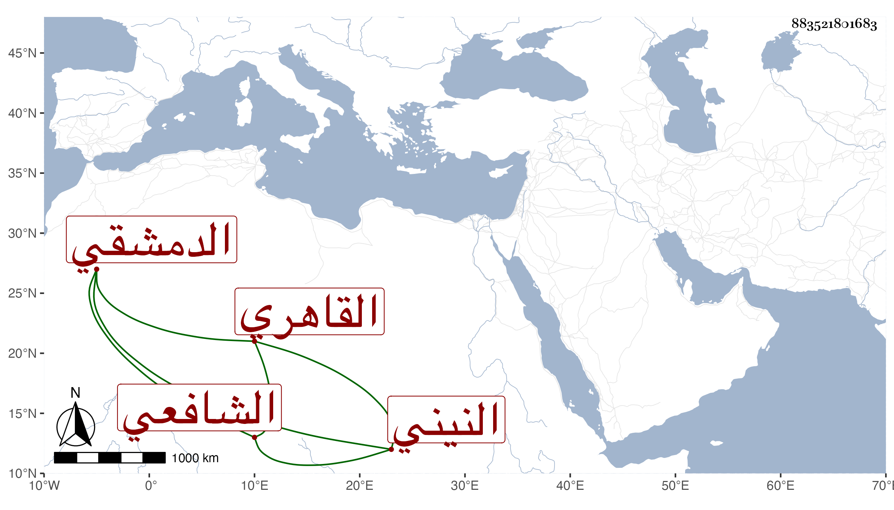

0902Sakhawi.DawLamic.ITO20230111-ara1.EIS1600.883521801683
Biography ID: 883521801683
917
محمد بن إبراهيم بن محمد بن إبراهيم بن صلح الكمال بن البرهان النيني ثم الدمشقي القاهري الشافعي الماضي أبوه ويعرف بابن القادري . حفظ القرآن وكتبا واشتغل يسيرا عند الجوجري وغيره وأحضره والده في الثانية خامس المحرم سنة أربع وخمسين ختم البخاري بالظاهرية وقرأ علي في الألفية وغيرها وما سلك مسك أبيه .
